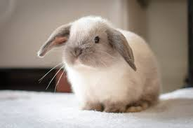

Królik Baranek (najczęściej spotykany w wersji miniaturowej jako Baranek Mini Lop) to jedna z najpopularniejszych ras domowych. Ludzkie serca zdobywa natychmiast swoim niemowlęcym wyglądem – okrągłą głową oraz charakterystycznymi, całkowicie oklapniętymi uszami, które zwisają wzdłuż policzków. Najważniejsze cechy rasy: Wygląd: Kompaktowe, krępe ciało, wyraźnie zaokrąglony pyszczek i długie, zwisające uszy. Waga: Zazwyczaj mieści się w granicach od 1,5 do 2 kg. Charakter: Ciekawskie, towarzyskie i bardzo skore do zabawy uszaki, które uwielbiają kontakt z ludźmi. Dla kogo: Idealny wybór na pierwszego królika, świetnie odnajduje się w mieszkaniach.